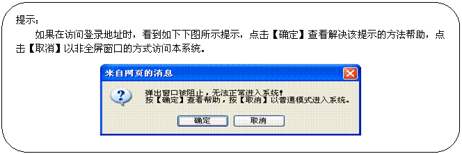
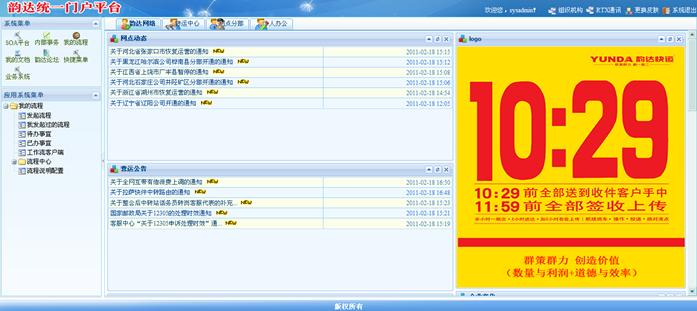

| 2.1 登录 |
系统登录是本系统的入口，当且仅当本模块通过的情况下，操作用户才可以进入本系统进行有权限的业务处理。
登录步骤如下：
第一步：在浏览器（推荐使用IE6）中输入http://soa.yundasys.com:20088/ydsoa/访问登录界面；

第二步：输入操作用户的用户名；
第三步：输入操作操作员的密码；
第四步：敲击键盘的回车键或使用鼠标点击界面中的功能按钮登录本系统；
第五步：如果用户输入的用户名和密码正确，则用户可以进入本系统，否则系统将提示用户重新录入正确的用户名和密码。
登录后进入如下界面：
左侧为操作员的可操作菜单树，右侧为实际操作区。
